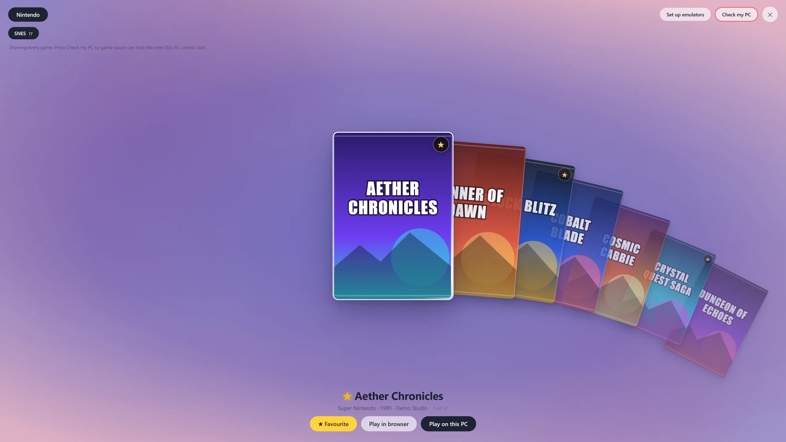

No seu próprio computador
Baixe o aplicativo de desktop ou a versão portátil para Windows, macOS ou Linux. Nada mais para instalar: sem servidor, sem Docker, sem configurações para editar.
Baixar a versão mais recenteGrátis · código aberto · auto-hospedado
O game-sauce cataloga os jogos que você tem, busca as capas, roda muitos deles no seu navegador, inicia o resto nos emuladores do seu PC e leva a biblioteca inteira para a TV com uma Tela grande controlada por gamepad.
Windows · macOS (Apple silicon) · Linux · Docker, Unraid e Proxmox · Raspberry Pi
As capturas de tela e os vídeos mostram uma biblioteca de demonstração. As capas e imagens dos jogos pertencem aos seus respectivos proprietários.
Uma só biblioteca para toda a casa, rodando em uma máquina sua.
Jogue os jogos compatíveis no navegador, até no celular.
Navegue, pesquise e jogue só com o controle.
Dois visuais, cada um em claro ou escuro. O Moderno acrescenta um modo extraescuro e uma fonte retrô.
Estrela nos melhores, o resto em coleções.
Leia o manual sem sair da página do jogo.
Windows, Mac, Linux, Docker, Raspberry Pi, Proxmox e Unraid.
Crie contas, defina o papel de cada pessoa e desative qualquer conta.
Uma grade simples de jogos jogáveis, sem downloads e sem páginas de administração. Ideal para as crianças.
Escolha quem pode baixar os arquivos de jogo: todos, ninguém ou pessoa por pessoa.
Cada pessoa vê seus próprios jogos de Steam e de console, e os de mais ninguém.
Cada pessoa tem sua própria estante de discos e cartuchos.
Inglês, francês, chinês, espanhol, português, alemão, japonês e italiano.
Sem rastreamento e sem pegadinha. Grátis, e seu.
Os backups e a geração das impressões digitais dos jogos rodam no horário que você definir.
Faça backup de tudo e restaure com facilidade quando precisar.
Um relatório geral sobre a saúde de todo o seu sistema.
Importe recursos de jogos a partir de pastas e arquivos zip.
Os administradores são avisados no chat quando sai uma nova versão.
Consoles, portáteis, computadores e arcade, lado a lado.
Conferidas com No-Intro e Redump, para saber que suas ROMs estão boas.
Encontra cópias extras e sugere qual manter.
Transforma nomes de arquivo como sf2 em Street Fighter II.
Veja quanto da lista oficial de cada plataforma você tem, entre ROMs, físico e digital.
Exporte sua coleção para CSV, edite em uma planilha e importe de volta.
Gráficos e estatísticas sobre tudo o que há na sua biblioteca.
Busque capas, logos e vídeos no ScreenScraper, SteamGridDB, IGDB ou TheGamesDB, ou use os seus.
Dois clipes curtos da biblioteca de demonstração embutida.
Uma visão em tela cheia feita para um gamepad e um sofá. Abra-a pela Biblioteca com um clique e coloque o navegador ou o aplicativo de desktop em tela cheia na TV.


Uma estante de capas em tela cheia em um arco suave. Escolha uma família e uma plataforma, role com as setas, a roda do mouse, um deslize ou um gamepad, e pressione jogar.
Catalogue os jogos em caixa da sua estante de verdade, manualmente ou de uma lista, ao lado da sua coleção digital. Cada pessoa tem a sua própria estante.
Mensagens privadas entre as pessoas do seu servidor e avisos do administrador. Nada sai da sua própria máquina.

Visuais Clássico e Moderno, claro e escuro. A mesma biblioteca, à sua escolha.





Escolha o que combina com você. Cada um leva alguns minutos.
Baixe o aplicativo de desktop ou a versão portátil para Windows, macOS ou Linux. Nada mais para instalar: sem servidor, sem Docker, sem configurações para editar.
Baixar a versão mais recenteRode com Docker, no Unraid ou em um contêiner do Proxmox, e use em todos os dispositivos da casa. O guia de implantação tem os passos.
Ler o guia de implantaçãoNa primeira vez que ele inicia, a conta que foi criada para você é mostrada uma única vez. Anote-a e mude a senha em Configurações. Se você expuser à internet, coloque atrás de uma VPN ou de um proxy reverso com HTTPS.
Não. O game-sauce serve para gerenciar jogos que você tem. Ele não inclui nem fornece jogos ou arquivos de BIOS, e não baixa jogos para você: você traz a sua própria coleção. Para jogar, o jogo no navegador roda com o EmulatorJS, um emulador de código aberto que o seu navegador carrega quando você pressiona Jogar. Para jogar no seu PC, a página Emuladores recomenda emuladores e linka onde obtê-los, e o iniciador abre os que você mesmo instala.
Sim. É de código aberto sob a licença MIT. Não há conta para criar, nem assinatura, nem rastreamento. Alguns provedores de metadados pedem que você crie a sua própria conta gratuita para usar o serviço deles.
Muitos consoles antigos que não precisam de BIOS funcionam a partir de uma página da web. Sistemas mais novos, e tudo que exige mais do que um navegador pode oferecer, iniciam em vez disso em um emulador no seu PC pelo iniciador.
Não nas pastas que você apontar. Ele lê os arquivos onde estão e nunca move, renomeia nem exclui os arquivos delas. As ferramentas de limpeza só tocam em imagens e em arquivos que o próprio game-sauce guardou.
Sim. Crie contas para as pessoas em quem você confia. As coleções são privadas de quem as criou, e as contas só de jogar veem apenas os jogos que podem ser jogados no navegador.
Abra uma issue ou uma discussão no GitHub, ou escreva para hello@gamesauce.app. A página Saúde do sistema em Configurações gera um relatório para copiar e colar, sem nenhum segredo.
O game-sauce é gratuito e de código aberto. Se for útil para você, pode me pagar um café. Isso me ajuda a dedicar mais tempo a novos recursos, a testes no Windows, Mac e Linux e a responder perguntas.